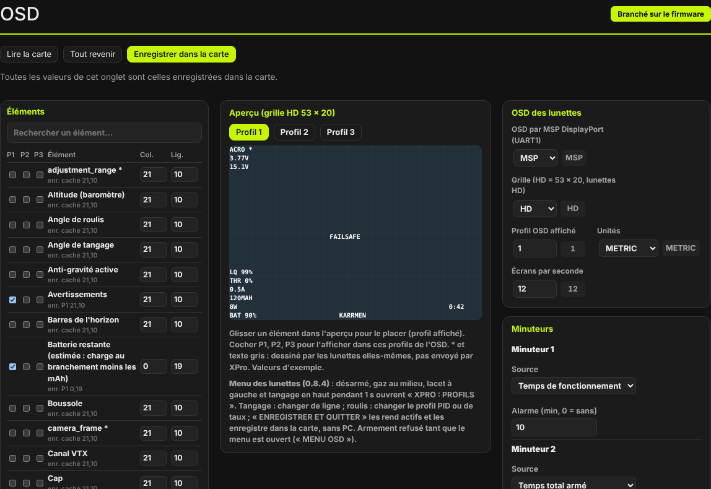
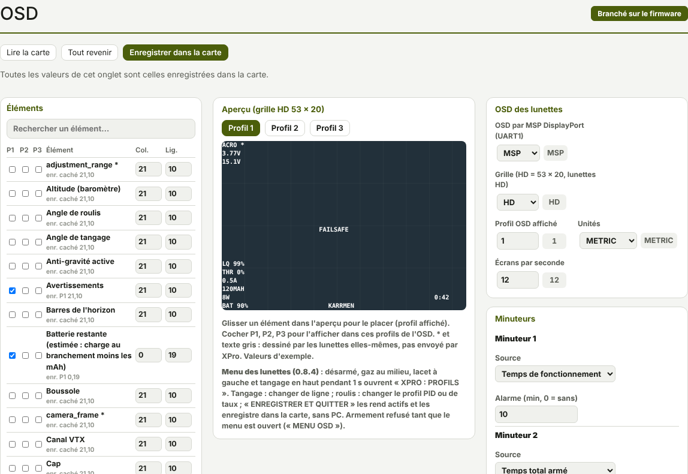

TRUEGLIDE
TRUEGLIDE OSD
L'onglet OSD (groupe Vidéo et lumières) choisit ce que les lunettes affichent et où. Trois colonnes : la liste des éléments à gauche, l'aperçu de l'image au centre, les réglages à droite.


Comme dans les autres onglets de réglages : Lire la carte, Tout revenir, Enregistrer dans la carte ; un réglage changé est encadré en orange, avec un bouton revenir, tant qu'il diffère de la valeur enregistrée.
Les éléments
- La liste suit l'ordre alphabétique. La case Rechercher un élément… filtre la liste pendant la frappe.
- P1, P2, P3 : cocher l'élément pour l'afficher dans les profils OSD 1, 2 ou 3.
- Col. (0 à 52) et Lig. (0 à 19) : sa place. Sous le nom, « enr. » rappelle la place et les profils enregistrés (« caché » s'il n'est dans aucun profil).
- Un nom suivi de * est dessiné par les lunettes elles-mêmes : XPro ne l'envoie pas (éléments
osd_sys_*,camera_frame…).
Les minuteurs 1 et 2 se placent comme les autres éléments (Minuteur 1, Minuteur 2). Sans GPS, boussole, VTX commandé ni horloge, les éléments qui en dépendent affichent « -- ».
L'aperçu
L'aperçu montre la grille HD 53 × 20 des lunettes, avec un trait toutes les 5 cases. Les boutons Profil 1, Profil 2, Profil 3 choisissent le profil dessiné.
- Carte connectée, glisser un élément dans l'aperçu.
- Au lâcher, la nouvelle place est envoyée à la carte (case orange dans la liste).
- Enregistrer dans la carte pour la garder.
Les éléments en gris dans l'aperçu sont ceux que les lunettes dessinent elles-mêmes.
Les réglages
| Cadre | Réglages |
|---|---|
| OSD des lunettes | OSD par MSP DisplayPort (NONE ou MSP), grille (SD = 30 × 16, HD = 53 × 20), profil OSD affiché (1 à 3), unités (METRIC ou IMPERIAL), écrans par seconde (12 par défaut, limités par la liaison à 115 200 bauds). |
| Minuteurs | Pour chaque minuteur : la source (Temps de fonctionnement, Temps total armé, Dernier armement, Marche, puis armé) et une alarme en minutes (0 = sans). L'élément clignote quand l'alarme est dépassée. |
| Alarmes | LQ en dessous (%), RSSI en dessous (% et dBm), signal/bruit en dessous (dB), consommation au-dessus (mAh), altitude au-dessus (m). |
| Horizon et voie AUX | Tangage et roulis maximaux de l'horizon artificiel, horizon inversé, voie et échelle de l'élément AUX. |
Le centre de l'onglet rappelle aussi le geste du menu des lunettes.
Alarmes et alertes
Une alarme dépassée fait clignoter son élément. Les alertes s'affichent dans la zone des
avertissements, au centre de l'image : en plus des alertes de liaison et d'armement (par exemple
PAS DE RADIO, SIGNAL PERDU, LOGICIEL CONNECTE), XPro affiche LAUNCH, CRASH, VRILLE,
ATTERRISSAGE et les alertes des protections TrueGlide : ESC HOT nn%,
AMP LIM nn%, M1 RESTART à M8 RESTART.
Lunettes Walksnail
Sur KarRmen, l'OSD part vers des lunettes Walksnail Avatar HD Goggles X par MSP DisplayPort, sur
l'UART1 (port réglé en Vidéo HD dans l'onglet Ports, osd_displayport_device =
MSP). La grille HD 53 × 20 est le défaut. Le firmware s'annonce « XPRO » aux lunettes, qui l'acceptent.
Essais sur KarRmen : OSD affiché sur tout l'écran, alerte au centre exact de l'image (essai B3-7, 15/10/2026) ; les deux dernières lignes passent sur la barre d'état des lunettes, comme l'OSD de KarRmen sous Betaflight (choix de Johann).
Statistiques après le vol
Après le désarmement, les lunettes montrent l'écran STATISTIQUES pendant 10 s : temps de vol, tension minimale, courant maximal, consommation, LQ minimal, altitude maximale. Une valeur inconnue s'affiche « -- ». L'écran a été vu correctement dans les lunettes de KarRmen à la fin de l'essai B9 (17/10/2026).